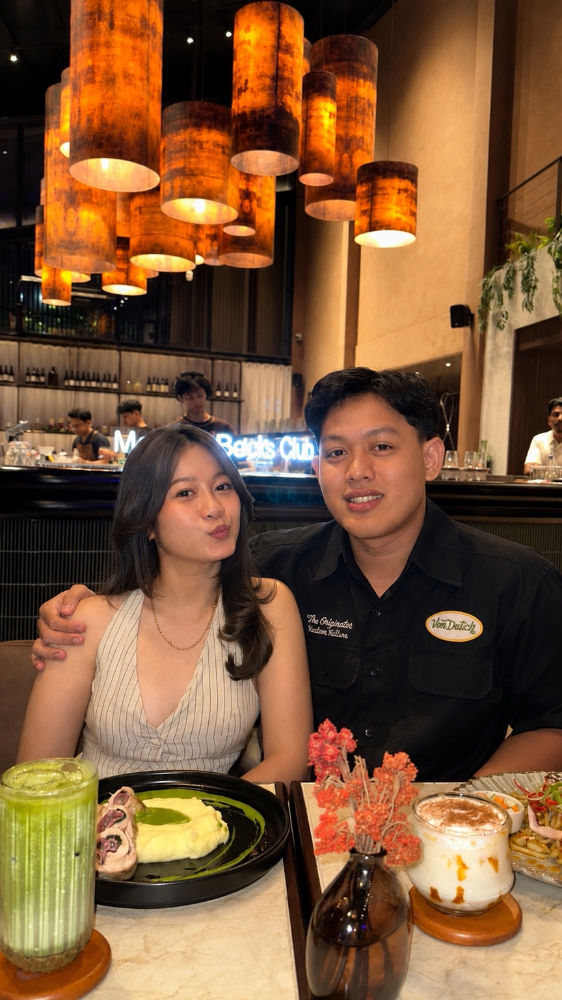
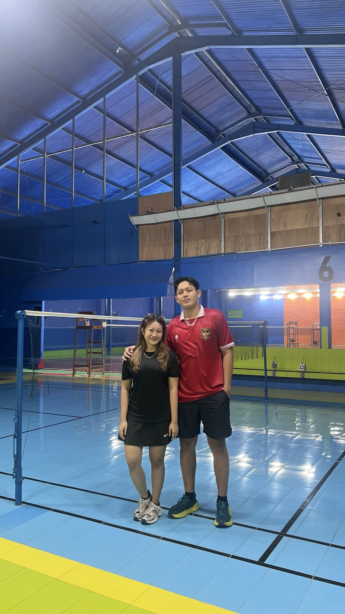
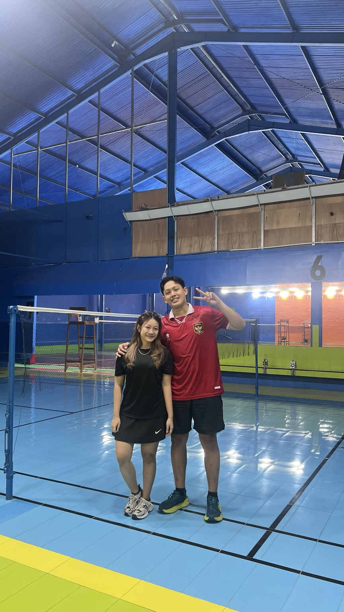
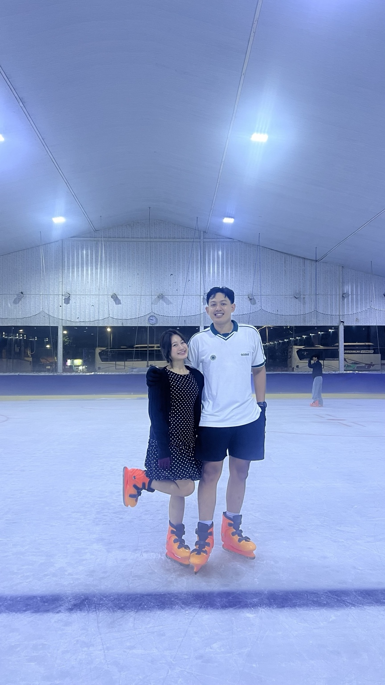
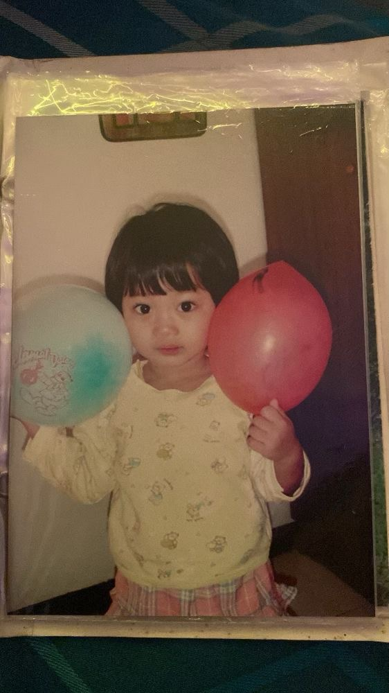
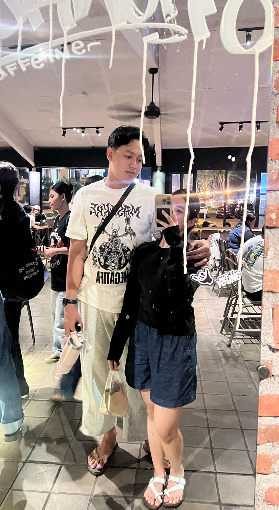
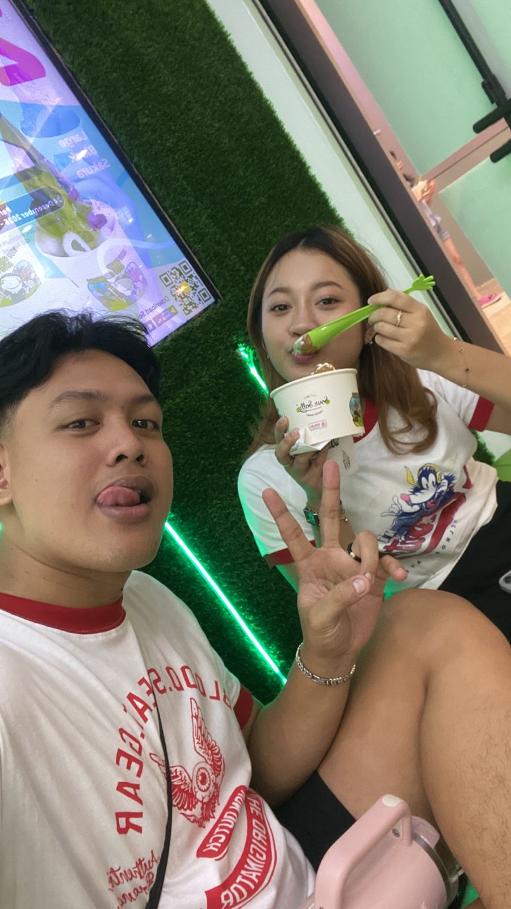
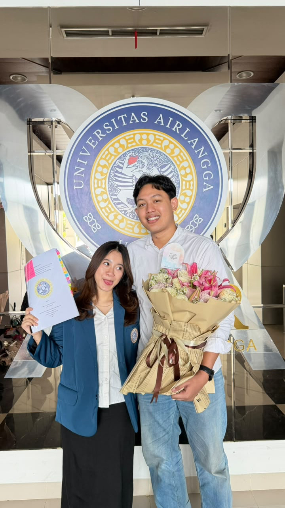

Untuk Sayang
Untuk kamu, Sayang.
Selamat ulang tahun yang ke-24, sayangku, Nabila Talitha Islami. 🤍
Hari ini bukan cuma tentang bertambahnya usia. Hari ini adalah tentang satu tahun lagi dari perjalanan hidupmu—tentang semua perjuangan, lelah, tawa, air mata, dan hal-hal yang sudah kamu lewati sampai kamu berada di titik ini.
Aku bersyukur, di antara begitu banyak perjalanan hidup, Tuhan mempertemukan kamu denganku.
Sedikit lagi kamu menyelesaikan S2 Hukum. Aku tahu perjalanan itu tidak selalu mudah. Ada tekanan, ada lelah, dan ada hari-hari ketika semuanya terasa berat. Tapi lihatlah kamu sekarang—sudah begitu dekat dengan salah satu pencapaian besar dalam hidupmu.
Aku ingin menjadi orang yang melihatmu berhasil. Melihat kamu menyelesaikan S2, mengejar cita-cita, membangun karier, dan menjadi perempuan hebat yang selama ini kamu perjuangkan untuk menjadi.
Dan tentang kita… kita tahu arah yang ingin kita tuju. Dua tahun lagi, semoga kita sudah melangkah ke babak baru—bukan lagi sekadar pacar yang saling mengucapkan selamat tidur lewat chat, tetapi dua orang yang pulang ke rumah yang sama.
Aku tidak bisa menjanjikan bahwa perjalanan menuju hari itu akan selalu mudah. Tapi aku ingin kita terus belajar: saling memahami ketika berbeda, saling menggenggam ketika lelah, dan tidak mudah memilih pergi ketika keadaan sedang tidak baik.
Kalau suatu hari nanti kita benar-benar sampai di hari yang kita impikan, aku ingin mengingat ulang tahunmu yang ke-24 ini sebagai salah satu halaman kecil dari cerita panjang kita.
“Semoga perempuan ini benar-benar menjadi rumahku kelak.”
Nabila, aku tidak menjanjikan hidup yang sempurna. Tapi aku ingin terus belajar menjadi laki-laki yang pantas berjalan bersamamu—menemanimu ketika lelah, mendukungmu ketika mengejar mimpi, mendengarkanmu ketika ingin bercerita, dan memelukmu ketika dunia terasa terlalu berat.
Semoga Allah menjaga langkahmu, melancarkan S2-mu sampai selesai, memberikan kesehatan, kesuksesan, ketenangan, dan kebahagiaan yang kamu pantas dapatkan.
Dan kalau aku boleh meminta satu hal untuk ulang tahunmu kali ini: semoga ketika kita membuka kembali website kecil ini beberapa tahun dari sekarang, kita bisa tersenyum sambil berkata, “Berarti waktu itu doa kita benar-benar dikabulkan.”
Selamat ulang tahun, sayang. 24 tahunmu adalah awal dari banyak hal indah yang masih akan kita jalani.
Potongan cerita kita.
Beberapa foto mungkin cuma terlihat seperti foto biasa. Tapi buatku, masing-masing menyimpan satu versi dari kita yang tidak akan pernah terulang persis sama.







Awal dari kita.
Hari kita dimulai
Hari ketika cerita kita resmi punya satu tanggal untuk selalu diingat.
24 tahun Nabila
Hari ini. Satu tahun lagi dari perjalananmu, dan satu halaman baru untuk perjalanan kita.
S2 selesai, mimpi bertambah
Aku ingin tetap berada di sampingmu ketika satu per satu targetmu berubah menjadi pencapaian.
Menuju 2028.
Belum ada tanggal yang kita tulis di kalender. Tapi kita sudah punya arah. Semoga dua tahun dari sekarang, kita tidak hanya merayakan ulang tahunmu—kita sedang menyiapkan rumah, keluarga, dan kehidupan yang kita bangun bersama.
Pelan-pelan saja, Sayang. Kita tidak harus tahu semua tanggalnya hari ini. Yang penting, kita terus berjalan ke arah yang sama.